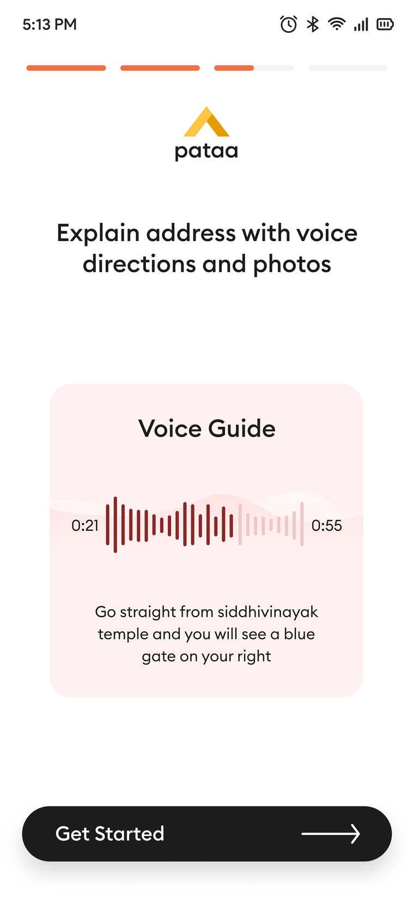

Pataa gives any spot in India a short code you can trust, and directions you can actually hear. In Hindi, पता (pata) means both an address and knowing where something is. This is the story of redesigning the parts people touch.
Neel Tengariya · UI/UX design, user research, and the create and share flows, on the Pataa 2022 redesign team at Prefme Matrix.

Real screens from the live app, on Android and iOS. Shown whole, nothing cropped.
Small pieces of the same app
At a glance · the thirty-second version
A written address gets a rider to your area. Pataa gets them to your door, without the phone call. It does it three ways.
The codeA handle you choose, seven to eleven characters, as easy to remember as a username.
The blockUnder the code sits one three by three metre block. The door, not the building.
The voiceThe last few steps, recorded once in your own words, carried with the code.
01 The phone call
Two people are stuck on the same phone call.
You know this call. You have been on both ends of it. It is the small daily friction a vague address leaves behind, and it happens millions of times a day across the country.
The person waiting
“I’m near your area. Where exactly are you?”
You ordered something. The app said out for delivery an hour ago. Now your phone rings, and you are describing the building again. The blue gate. The shop below. The turn after the temple.
The person delivering
Forty of these calls. On a bike, in the rain.
On the other end is a rider who has made this same call all day, paid by the drop. Every vague address costs him minutes he does not have, and the meter is his own time.
~30%
of India’s delivery cost sits in the last mile, against roughly a tenth where an address already resolves to a point.
$10–14 B
a year is the rough drag the addressing gap is estimated to put on the economy.
Figures from MIT Emerging World and Delhivery, here as the context Pataa was built into. They describe the market, not results from this project. Pataa already existed and was growing before we joined; we did not invent it, the ShortCode, or the block system.
02 Research
We rewrote our own brief.
We ran six long interviews. Delivery riders, logistics coordinators, and a few people who simply travel a lot and get lost the way everyone does. Then we read every credible thing we could find on how addressing works across the country, and how it fails.
The obvious brief
Make the address shorter.
Give every place something like a PIN code, only tighter. A shorter code still drops you at the start of the last twenty metres with no idea which gate is yours. And the people who navigate for a living do not think in coordinates at all.
What we built instead
An address you can trust at a glance, and act on without a phone call.
The people who navigate for a living do not think in coordinates. They think in landmarks.
From the research synthesis
The temple you pass, the blue shutter, the mall you turn before. A precise number is simply not how one person gives directions to another. That one change decided everything after it.
03 The people
Every address has two sides.
An address is not used by one kind of person. It is created by one and arrived at by another, and a second thing, how comfortable each is with a phone, decides what the design has to carry.
Rajesh, 28
Delivery rider · Delhi · the finder
Runs forty-plus drops a shift, paid per delivery, one hand on the bike. Needs the exact door in one look, a landmark he knows, a route he can start without calling.
Anjali, 31
Marketing manager · Bangalore · the sender
Orders often, hosts, sends gifts, lives inside maps and chat. Needs one precise thing to share that a stranger can act on without her narrating the way.
Mohan, 65
Retired teacher · Agartala · both sides
First smartphone, reads slowly, prefers his own language, weak signal at home. Needs to hear the way in Hindi, big obvious buttons, something that works offline.
Mohan is the one who moved the product. Build something Rajesh can fly through and you get a faster app. Build something Mohan can use at all and you are pushed into voice, more than one language, and buttons large enough to hit without aiming. Each choice, made for the person with the least, quietly made the app better for the two with more.
Persona portraits are representative images. The three are archetypes drawn from the user interviews, not real individuals.
04 Method
From deliberately bad ideas to tested screens.
We sorted everything a first version might do into four priority tiers, so the team argued about the ladder once instead of about every screen. The non-negotiable came first: land the person on the exact endpoint. Everything clever had to wait behind that.
Then we drew. Crazy Eights, eight ideas in eight minutes, including one round where the whole point was to draw the worst solutions we could think of, on purpose. A table covered in bad ideas is the fastest cure for clinging to your first safe one. We went straight to mid-fidelity screens in Figma, then tested them twice, with six people chosen to stand in for Rajesh, Anjali and Mohan.
The route preview felt a bit cluttered; it was hard to differentiate alternate routes.
A participant in usability testing. We had over-drawn the preview, so we pulled it back.
The geotagging felt precise and genuinely useful for finding the exact spot.
A tester, on the block-level pin. It told us the core idea was landing.
05 The solution
A handle that is also a coordinate.
What we shipped reads like a handle you would pick for yourself. Seven to eleven characters, something like ^KUMAR100. Underneath the friendly name it is a precise geocode: one specific three by three metre block out of the roughly fifty-seven trillion that tile the map. You hand someone the name. The app resolves the block.
^KUMAR100
Your handle
Memorable, human, chosen by you.
A geocode underneath
Resolves to one 3 by 3 metre square.
One meaning
The door, not the area around it.
Making one is staged on purpose, so it never asks for everything at once.
1Choose your code, checked as you type.2Add the details that make it yours.3Drop one pin on the exact block.
Three real screens from the create flow. The add-details step is a genuine app screenshot, not a mock-up.
06 The heart
Here, an address stops being text.
This is the part I still care about most. A code puts you on the right block. It does not tell you the entrance is behind the sweet shop, up the side stairs, past the blue gate. People have always closed that last gap with a sentence. Pataa lets you record the sentence once and pin it to the code.
You hold the mic and just say it: go straight from the mall, the blue gate is on your right. It saves as a clean waveform you can play back, in English or in Hindi. If you would rather type than talk, you type, and the app reads it aloud to whoever is on the way.
The real card, waveform and all. Recorded once, it travels with the code to whoever you send it to. No recreation, no code drawing a fake waveform. This is the app.
The call-me-when-you-are-close conversation does not get shorter. It stops happening.
And a picture carries what a sentence cannot. For a place that is genuinely hard to describe, the entrance in a photo beats any amount of text, so up to three photos of the door ride along with the code too.
Photos of the actual entrance. The finder recognises the door before they reach it, so there is nothing left to describe on a call.
A voice-guided navigation option would make this a game-changer for drivers.
A driver, in a moderated testing session
07 The other side
And this is what the finder sees.
Everything above is the sender’s work, done once. For the person arriving, the same Pataa becomes something simpler than an address. A code to read, a voice to play, a landmark called out a couple of kilometres before the turn, and one button that starts the route. Nothing to type. No call to make.
The finder’s screen, whole. The shared Pataa, its voice direction anchored to a landmark, and a single Navigate. The last mile becomes one tap.
08 Semantic honesty
Loud on purpose.
One screen in this app taught me something I have leaned on in every project since. Pataa can share your live location with someone for a set stretch of time. That is genuinely useful, and a little dangerous, so the design refuses to be quiet about it.
While it is on, it is loud. A maroon card sits on the screen and says exactly what is true: live location active, sharing now, with this person, for this long. A timer counts down in front of you, and the tap that turns it off is right there, not buried three menus deep.
The real state, whole. Nothing about it is hidden or softened. Stop is one tap, and one tap turns it genuinely off.
The rule we held was simple. A live-location state that lies about whether it is on is a worse failure than one that merely looks ugly.
Sharing where you are is not something a design should ever be quiet or dishonest about.
Neel Tengariya
Pataa is where I first started treating honesty as a material you build with, the same as colour or type or space. It is the idea most of my work is organised around now.
09 System & outcome
Everything else stays in service of the door.
The same standard runs through the rest of the app. A code you scan instead of type, so even a spot with no name gets one. A household that can share one base code, so a family is not three separate addresses. Weather tied to the exact block. A drone-delivery pilot waiting at the far edge, for the day the block matters to a machine and not only a rider.
Square CodeA code for places that never had one. A field gate, a shop with no signboard. Scan it, land on the exact block.Drone padAn early pilot. It only makes sense once an address is a single block instead of an area.
7.5M+
downloads Pataa has reached across Android and iOS. This is the scale of the product I helped redesign; it is not a number this project claims to have driven. The app was already past three million downloads by August 2021, before I joined.
§ Looking back
What I would keep, what I would change.
The best decision here was refusing the easy brief. Make it shorter would have shipped, and it would have shipped something worse. The only reason we could tell the difference is that we had gone and asked. Research was not a box we cleared before the real work. It was the thing that told us what the real work was.
What I would do differently: test the onboarding far earlier. The hard part of Pataa was never the map or the waveform. It was the first thirty seconds, teaching a person that their address could be a code they choose. Teaching a genuinely new idea is the real design problem, and it deserved our attention sooner than it got it.
Underneath both, the thing I keep saying. Honesty is something you design on purpose, or it quietly goes missing.